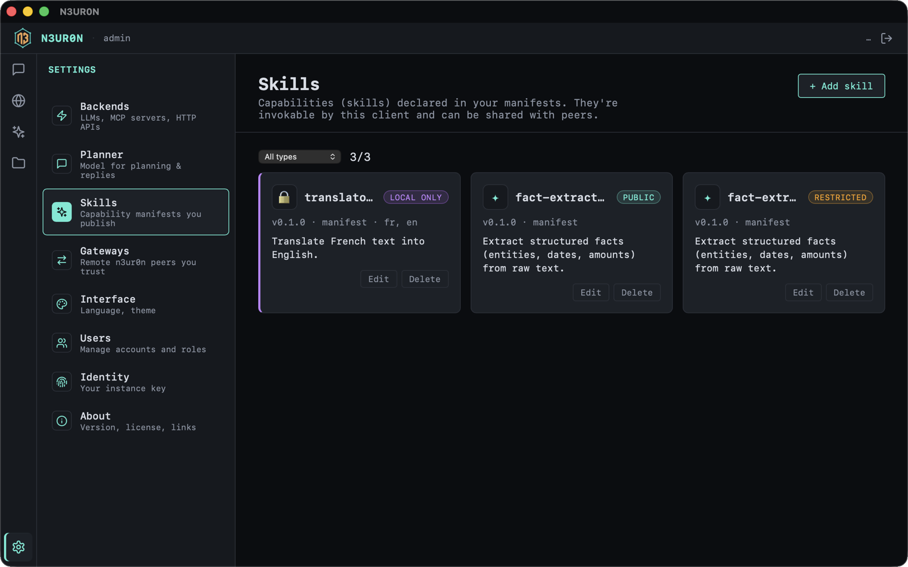

Desktop
Tauri app on loopback. Chat with your instance; the planner compiles and executes against the network. No public listener by default.
AI skills, shared peer to peer.
Run a small gateway — a neuron — that turns your local LLM, tools, or APIs into skills any peer can call, and call theirs back. No platform in the middle: your keys, your nodes, signed end to end.

Why it exists
Calling someone else’s model or tool usually means routing through a platform that hosts it, meters it, and can revoke it. N3UR0N removes that middle. Capabilities stay on the machines that run them, and any peer can discover and invoke them directly — with cryptographic proof of who sent what.
One signed invoke, end to end:
# call a peer's "chat" capability
n3ur0n send --endpoint https://peer.example \
--verb invoke \
--payload '{"capability":"chat",
"args":{"prompt":"Summarise this repo."}}'
# → signed reply, verified against the sender's ID
# {"model":"llama3.1:8b",
# "message":{"role":"assistant","content":"…"},
# "finish_reason":"stop"}What it is
Each participant runs a small instance — a neuron — that exposes AI backends as capabilities: a local LLM, an MCP tool, an HTTP API, a prompted skill. Peers discover those capabilities and invoke them with cryptographically signed envelopes.
Identity is self-certifying:
n3: + Base32(SHA-256(Ed25519 public key)).
Anyone can verify; no one needs a registry to issue an ID.
Capabilities are data on disk, not plugins in the binary. Add a skill by writing a manifest. Hot-reload. Swap the backend without rewriting callers.
How it works
Four verbs today: describe_self, get_known_peers,
ping, invoke — plus a blob side-channel when bytes
are too large for JSON envelopes.
Author a cap.toml, bind it to a backend, and expose an endpoint. Your neuron advertises what it can do.
Bootstrap from a peer you trust. Cascade depth-1 gossip fills a local directory of capabilities.
Send a signed Ed25519 envelope. The peer verifies binding, signature, recipient, and anti-replay — then runs the skill.
Profiles
One Rust workspace. Consumer and publisher differ by how they listen — not by a second protocol.
Tauri app on loopback. Chat with your instance; the planner compiles and executes against the network. No public listener by default.
CLI on a VPS or homelab. HTTPS listener, manifests on disk, optional restricted access per capability. Expose skills to peers.
Get started
First tagged release. Desktop installers and server binaries are attached to the GitHub Release. The apps are not code-signed yet, so macOS Gatekeeper and Windows SmartScreen will warn on first launch — see the note below.
Pick your installer on the release page: .dmg (macOS universal), .AppImage / .deb (Linux), .msi (Windows).
Unsigned build.
macOS: after the “cannot be verified” dialog, run
xattr -dr com.apple.quarantine /Applications/N3UR0N.app,
or allow it in System Settings → Privacy & Security → Open Anyway.
Windows: SmartScreen → More info → Run anyway.
Headless publisher — no toolchain needed. Direct downloads:
# macOS (Apple Silicon)
curl -L -o n3ur0n https://github.com/numerum-tech/n3ur0n/releases/latest/download/n3ur0n-macos-aarch64
# macOS (Intel): n3ur0n-macos-x86_64
# Linux x86_64: n3ur0n-linux-x86_64
# Linux aarch64: n3ur0n-linux-aarch64
# Windows: n3ur0n-windows-x86_64.exe
chmod +x n3ur0n && ./n3ur0n init && ./n3ur0n serve --port 4242 \
--endpoint http://127.0.0.1:4242 --bootstrap https://seed.n3ur0n.netMulti-arch publisher image on GitHub Container Registry.
docker pull ghcr.io/numerum-tech/n3ur0n:latest
docker run --rm ghcr.io/numerum-tech/n3ur0n:0.4.1 --helpRequires Rust stable and (optionally) a local Ollama.
cargo build --release -p n3ur0n-server
./target/release/n3ur0n init
./target/release/n3ur0n serve --port 4242 \
--endpoint http://127.0.0.1:4242 \
--backend ollama --openai-model llama3.1:8b \
--bootstrap https://seed.n3ur0n.net
# UI → http://localhost:4242/ui/Multi-node smoke layout in the repo.
docker compose -f docker/compose.yml up -d --build
# planner UI → http://localhost:4242/ui/Network
A public bootstrap seed peer runs at
seed.n3ur0n.net — a minimal, protocol-only publisher.
Point a fresh node at it to discover your first peers and their capabilities.
It carries no UI and answers protocol paths only; discovery cascades from there to the rest of the network.
n3ur0n serve --port 4242 \
--endpoint https://your-host.example \
--bootstrap https://seed.n3ur0n.net